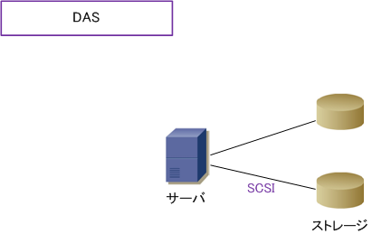
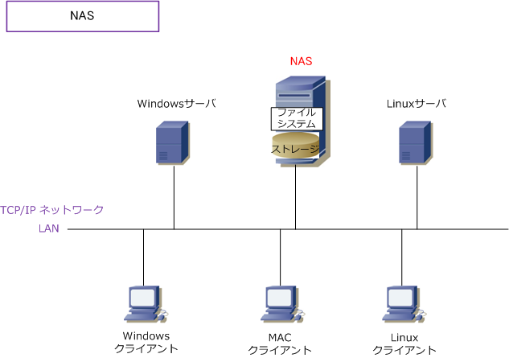
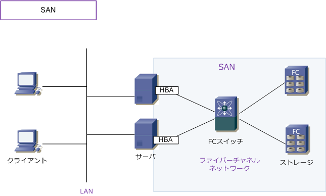

Network Storage
ストレージとは
ストレージとは、デジタル情報を記憶/保存する装置のことで、ハードディスク、MO、CD-R、磁気テープ などが該当します。ストレージの接続形態にはDAS、NAS、SANの大きく3種類があります。ストレージを サーバなどに直接接続する形態はDAS（Direct Attached Storage）、ストレージをネットワーク上に接続 する形態にはNAS（Network Attached Storage）とSAN（Storage Area Network）の2種類があります。 ※ NAS や SAN の接続形態によって利用するストレージのことを、ネットワークストレージといいます。
DAS ( Direct Attached Storage )
DASは、1台のサーバなどに直接接続する形態のことです。または、サーバに直接接続するストレージの そのものを指します。ストレージの接続にはATA、SATA、SCSI、SASがプロトコルとして用いられます。 DASの構成では、接続に専門の知識が必要なく増設も容易ですが、複数のサーバでストレージを共有する ことができず、例えば、余っているストレージの領域を別のサーバで利用できないデメリットがあります。

NAS ( Network Attached Storage )
NASは、ネットワークを介して接続する形態のことです。または、ネットワークを介し利用するストレージ そのもの（ネットワークストレージ）を指します。NASは「ハードディスク、LANインターフェース、簡易 OS」などで構成されるファイルサーバ専用機と言えます。NASは、LAN接続型ハードディスクとも呼ばれ ています。NASは、Windows、MAC、Linuxなどの各OSのファイル共有プロトコルをサポートしています。 ※ NASは外付け型のHDDとは異なります。外付け型HDDの場合、LANではなくUSBやIEEE1394経由でデータをやり取りします。

※ 当方も家庭内LANにNASを導入しています。最近のNAS（LAN接続型ハードディスク）は高機能・低価格で非常に便利です。
SAN ( Storage Area Network )
SANは、ストレージとサーバ間をFC（ファイバチャネル）で接続したストレージ専用のネットワークのこと。 ファイバチャネルは、サーバなどのコンピュータと周辺機器を接続し、高速伝送を可能にする方式のことです。 ファイバチャネルに光ファイバーを使用して、LANとは独立したストレージ専用のネットワークを構築します。
NASでは、CIFS、NFS、AFP等のファイル共有プロトコルは問題なく使用できますが、一部のデータベースの アプリケーションには適していません。一方、SANでは幅広いアプリケーションに対応しています。SANでは DASやNASに比べて導入コストが高いこと、導入に際して高度な専門知識が必要となるデメリットがあります。 ※ NASではファイルシステムを介しストレージ装置を利用します。SANではハードディスク等のストレージ装置そのものを共有します。

iSCSI などを使用した IP-SAN の場合、ネットワークインフラを「FCスイッチ ではなくイーサネットスイッチ」で構成が可能です。